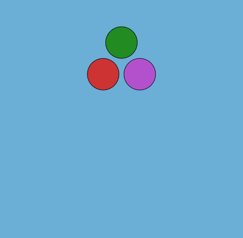
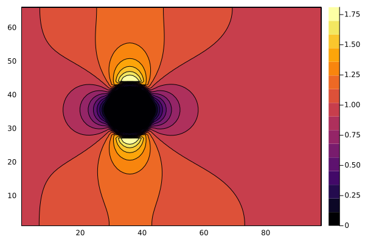
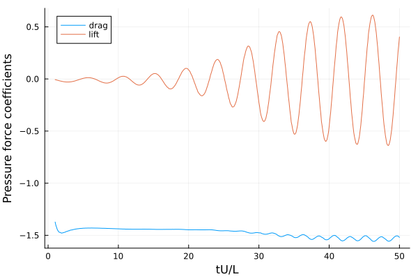
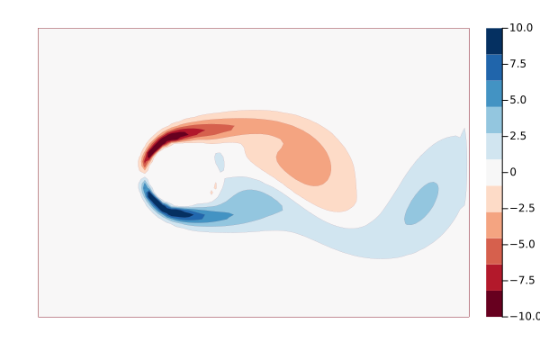

WaterLily
Introduction and Quickstart
WaterLily — ModuleWaterLily.jl



Overview
WaterLily.jl is a simple and fast fluid simulator written in pure Julia. This project is supported by awesome libraries developed within the Julia scientific community, and it aims to accelerate and enhance fluid simulations. Watch the JuliaCon2024 talk here:
If you have used WaterLily for research, please cite us! The 2025 paper describes the main features of the solver and provides benchmarking, validation, and profiling results.
@article{WeymouthFont2025,
author = {G.D. Weymouth and B. Font},
title = {WaterLily.jl: A differentiable and backend-agnostic Julia solver for incompressible viscous flow around dynamic bodies},
doi = {10.1016/j.cpc.2025.109748},
journal = {Computer Physics Communications},
year = {2025},
volume = {315},
pages = {109748},
}Method/capabilities
WaterLily solves the unsteady incompressible 2D or 3D Navier-Stokes equations on a Cartesian grid. The pressure Poisson equation is solved with a geometric multigrid method. Solid boundaries are modelled using the Boundary Data Immersion Method. The solver can run on serial CPU, multi-threaded CPU, or GPU backends.
Example: Flow over a circle
WaterLily lets the user can set the domain size and boundary conditions, the fluid viscosity (which determines the Reynolds number), and immerse solid obstacles. A large selection of examples, notebooks, and tutorials are found in the WaterLily-Examples repository. Here, we will illustrate the basics by simulating and plotting the flow over a circle.
We define the size of the simulation domain as n by m cells. The circle has radius m/8 and is centered at (m/2,m/2). The flow boundary conditions are (U,0), where we set U=1, and the Reynolds number is Re=U*radius/ν where ν (Greek "nu" U+03BD, not Latin lowercase "v") is the kinematic viscosity of the fluid.
using WaterLily
function circle(n,m;Re=100,U=1)
# signed distance function to circle
radius, center = m/8, m/2-1
sdf(x,t) = √sum(abs2, x .- center) - radius
Simulation((n,m), # domain size
(U,0), # domain velocity (& velocity scale)
2radius; # length scale
ν=U*2radius/Re, # fluid viscosity
body=AutoBody(sdf)) # geometry
endThe circle geometry is defined using a signed distance function. The AutoBody function uses automatic differentiation to infer the other geometric parameters of the body automatically. Replace the circle's distance function with any other, and now you have the flow around something else... such as a donut or the Julia logo. For more complex geometries, ParametricBodies.jl defines a body using any parametric curve, such as a spline. See that repo (and the video above) for examples.
The code block above return a Simulation with the parameters we've defined. Now we can initialize a simulation (first line) and step it forward in time (second line)
circ = circle(3*2^5,2^6)
sim_step!(circ)Note we've set n,m to be multiples of powers of 2, which is important when using the (very fast) geometric multi-grid solver.
We can now access and plot whatever variables we like. For example, we can plot the x-component of the velocity field using
using Plots
u = circ.flow.u[:,:,1] # first component is x
contourf(u') # transpose the array for the plot
As you can see, the velocity within the circle is zero, the velocity far from the circle is one, and there are accelerated and decelerated regions around the circle. The sim_step! has only taken a single time step, and this initial flow around our circle looks similar to the potential flow because the viscous boundary layer has not separated yet.
A set of flow metric functions have been implemented, and we can use them to measure the simulation. The following code block defines a function to step the simulation to time t and then use the pressure_force metric to measure the force on the immersed body. The function is applied over a time range, and the forces are plotted.
function get_forces!(sim,t)
sim_step!(sim,t,remeasure=false)
force = WaterLily.pressure_force(sim)
force./(0.5sim.L*sim.U^2) # scale the forces!
end
# Simulate through the time range and get forces
time = 1:0.1:50 # time scale is sim.L/sim.U
forces = [get_forces!(circ,t) for t in time];
#Plot it
plot(time,[first.(forces) last.(forces)],
labels=["drag" "lift"],
xlabel="tU/L",
ylabel="Pressure force coefficients")
We can also plot the vorticity field instead of the u-velocity to see a snap-shot of the wake.
# Use curl(velocity) to compute vorticity `inside` the domain
ω = zeros(size(u));
@inside ω[I] = WaterLily.curl(3,I,circ.flow.u)*circ.L/circ.U
# Plot it using WaterLily's Plots Extension
flood(ω,clims = (-10,10),border=:none)
Note that flood is a convience function within WaterLily to create 2D flood plots. As you can see, WaterLily correctly predicts that the flow is unsteady, with an alternating vortex street wake, leading to an oscillating side force and drag force.
Multi-threading and GPU backends
WaterLily uses KernelAbstractions.jl to multi-thread on CPU and run on GPU backends. The implementation method and speed-up are documented in the 2024 paper, with costs as low as 1.44 nano-seconds measured per degree of freedom and time step!
Note that multi-threading requires starting Julia with the --threads argument, see the multi-threading section of the manual. If you are running Julia with multiple threads, KernelAbstractions will detect this and multi-thread the loops automatically.
Running on a GPU requires initializing the Simulation memory on the GPU, and care needs to be taken to move the data back to the CPU for visualization. As an example, let's compare a 3D GPU simulation of a sphere to the 2D multi-threaded CPU circle defined above
using CUDA,WaterLily
function sphere(n,m;Re=100,U=1,T=Float64,mem=Array)
radius, center = m/8, m/2-1
body = AutoBody((x,t)->√sum(abs2, x .- center) - radius)
Simulation((n,m,m),(U,0,0), # 3D array size and BCs
2radius;ν=U*2radius/Re,body, # no change
T, # Floating point type
mem) # memory type
end
@assert CUDA.functional() # is your CUDA GPU working??
GPUsim = sphere(3*2^5,2^6;T=Float32,mem=CuArray); # 3D GPU sim!
println(length(GPUsim.flow.u)) # 1.3M degrees-of freedom!
sim_step!(GPUsim) # compile GPU code & run one step
@time sim_step!(GPUsim,50,remeasure=false) # 40s!!
CPUsim = circle(3*2^5,2^6); # 2D CPU sim
println(length(CPUsim.flow.u)) # 0.013M degrees-of freedom!
sim_step!(CPUsim) # compile GPU code & run one step
println(Threads.nthreads()) # I'm using 8 threads
@time sim_step!(CPUsim,50,remeasure=false) # 28s!!As you can see, the 3D sphere set-up is almost identical to the 2D circle, but using 3D arrays means there are almost 1.3M degrees-of-freedom, 100x bigger than in 2D. Never the less, the simulation is quite fast on the GPU, only around 40% slower than the much smaller 2D simulation on a CPU with 8 threads. See the 2024 paper and the examples repo for many more non-trivial examples including running on AMD GPUs.
Finally, KernelAbstractions does incur some CPU allocations for every loop, but other than this sim_step! is completely non-allocating. This is one reason why the speed-up improves as the size of the simulation increases.
Contributing and issues
We always appreciate new contributions, so please submit a pull request with your changes and help us make WaterLily even better! Note that contributions need to be submitted together with benchmark results - WaterLily should always be fast! 😃 For this, we have a fully automated benchmarking suite that conducts performance tests. In short, to compare your changes with the latest WaterLily, clone the that repo and run the benchmarks with
git clone https://github.com/WaterLily-jl/WaterLily-Benchmarks && cd WaterLily-Benchmarks
sh benchmark.sh -wd "<your/waterlily/path>" -w "<your_waterlily_branch> master"
julia --project compare.jlThis will run benchmarks for CPU and GPU backends. If you do not have a GPU, simply pass -b "Array" when runnning benchmark.sh. More information on the benchmark suite is available in that README.
Of course, ideas, suggestions, and questions are welcome too! Please raise an issue to address any of these.
Development goals
- Immerse obstacles defined by 3D meshes (Meshing.jl)
- Multi-CPU/GPU simulations (https://github.com/WaterLily-jl/WaterLily.jl/pull/141)
- Free-surface physics with (Volume-of-Fluid) or other methods.
Types Methods and Functions
WaterLilyWaterLily.AbstractBodyWaterLily.AutoBodyWaterLily.FlowWaterLily.MeanFlowWaterLily.MultiLevelPoissonWaterLily.NoBodyWaterLily.PoissonWaterLily.RigidMapWaterLily.SetBodyWaterLily.SimulationWaterLily.BC!WaterLily.BDIM!WaterLily.CFLWaterLily.CIjWaterLily.GaussSeidelRB!WaterLily.Jacobi!WaterLily.L₂WaterLily.SWaterLily._loop_offsetWaterLily.accelerate!WaterLily.apply!WaterLily.check_memWaterLily.check_nthreadsWaterLily.comm!WaterLily.conv_diff!WaterLily.curlWaterLily.curvatureWaterLily.divisibleWaterLily.downWaterLily.effective_perdirWaterLily.exitBC!WaterLily.global_allreduceWaterLily.global_dotWaterLily.global_lengthWaterLily.global_maxWaterLily.global_minWaterLily.global_offsetWaterLily.global_sumWaterLily.init_waterlily_mpiWaterLily.insideWaterLily.inside_uWaterLily.interpWaterLily.keWaterLily.locWaterLily.local_perdotWaterLily.loggerWaterLily.measureWaterLily.measure!WaterLily.measure!WaterLily.measure_sdf!WaterLily.mom_step!WaterLily.mpi_rankWaterLily.mult!WaterLily.ndsWaterLily.pcg!WaterLily.perBC!WaterLily.perturb!WaterLily.pin_pressure!WaterLily.pressure_forceWaterLily.pressure_momentWaterLily.project!WaterLily.residual!WaterLily.restrictWaterLily.restrictLWaterLily.restrictL!WaterLily.restrictMLWaterLily.scalar_halo!WaterLily.sdfWaterLily.sdfWaterLily.set_backendWaterLily.sgs!WaterLily.sim_infoWaterLily.sim_step!WaterLily.sim_timeWaterLily.sliceWaterLily.solver!WaterLily.solver!WaterLily.timeWaterLily.total_forceWaterLily.udf!WaterLily.upWaterLily.velocity_comm!WaterLily.velocity_halo!WaterLily.viscous_forceWaterLily.δWaterLily.λ₂WaterLily.ωWaterLily.ω_magWaterLily.ω_θWaterLily.∂WaterLily.@distributedWaterLily.@insideWaterLily.@loop
WaterLily.AbstractBody — TypeAbstractBodyImmersed body Abstract Type. Any AbstractBody subtype must implement
d,n,V = measure(body::AbstractBody, x, t=0, fastd²=Inf)where d is the signed distance from x to the body at time t, and n & V are the normal and velocity vectors implied at x. A fast-approximate method can return ≈d,zero(x),zero(x) if d^2>fastd².
WaterLily.AutoBody — TypeAutoBody(sdf,map=(x,t)->x) <: AbstractBodysdf(x::AbstractVector,t::Real)::Real: signed distance functionmap(x::AbstractVector,t::Real)::AbstractVector: coordinate mapping function
Implicitly define a geometry by its sdf and optional coordinate map. Note: the map is composed automatically i.e. sdf(body::AutoBody,x,t) = body.sdf(body.map(x,t),t).
WaterLily.Flow — TypeFlow{D, T, Sf, Vf, Tf}Composite type for a multidimensional immersed boundary flow simulation.
Flow solves the unsteady incompressible Navier-Stokes equations on a Cartesian grid. Solid boundaries are modelled using the Boundary Data Immersion Method. The primary variables are the scalar pressure p (an array of dimension D) and the velocity vector field u (an array of dimension D+1).
All arrays use the N+2 staggered layout: N interior cells plus 1 ghost/boundary cell per side, giving total size M = N + 2 per spatial dimension.
WaterLily.MeanFlow — TypeMeanFlow{T, Sf<:AbstractArray{T}, Vf<:AbstractArray{T}, Mf<:AbstractArray{T}}Holds temporal averages of pressure, velocity, and squared-velocity tensor.
WaterLily.MultiLevelPoisson — TypeMultiLevelPoisson{T,S,V}Composite type used to solve the pressure Poisson equation with a geometric multigrid method. The main field is levels, a vector of nested Poisson systems from fine to coarse.
WaterLily.NoBody — TypeNoBodyUse for a simulation without a body.
WaterLily.Poisson — TypePoisson{T, S, V}Composite type for conservative variable coefficient Poisson equations:
∮ds β ∂x/∂n = σThe resulting linear system is
Ax = [L+D+L']x = zwhere A is symmetric, block-tridiagonal and extremely sparse. Moreover, D[I]=-∑ᵢ(L[I,i]+L'[I,i]). This means matrix storage, multiplication, etc. can be easily implemented and optimized without external libraries.
The lower diagonal L is aliased to flow.μ₀; BC! on μ₀ already zeros normal-direction values at wall faces, giving L[wall_face]=0 for an implicit Neumann BC. Ghost-cell synchronization uses comm! (= perBC! + scalar_halo!) rather than bare perBC!, so that MPI rank-internal boundaries are handled correctly.
To help iteratively solve the system, the structure holds helper arrays for inv(D), the error ϵ, and residual r=z-Ax. An iterative solution method estimates the error ϵ≈A⁻¹r and increments x+=ϵ, r-=Aϵ. The solver ends with pin_pressure! + comm! to remove the null-space mode and synchronize halos.
WaterLily.RigidMap — TypeRigidMap(center, θ) <: AbstractBodyx₀::SVector{D}: coordinate of the center of the bodyθ::Union{Real, SVector{3}}: rotation (single angle in 2D, and in 3D these are the rotation angle around the x, y, and z axes respectively.)V::SVector{D}=zero(center): linear velocity of the centerxₚ::SVector{D}=zero(center): offset of the pivot point compared to centerω::Union{Real, SVector{3}}=zero(θ): angular velocity (scalar in 2D, vector in 3D)
Define a RigidMap for any AbstractBody using rigid body motion parameters.
RigidMap updates are computed externally via a set of ODEs and then updated in the simulation loop following:
using WaterLily,StaticArrays
body = AutoBody((x,t)->sqrt(sum(abs2,x))-4,RigidMap(SA{Float32}[16,16],0.f0;ω=0.1f0))
sim = Simulation((32,32),(1,0),8;body)
for n in 1:10
# update body motion (example: constant angular velocity)
θ = sim.body.map.θ + sim.body.map.ω*sim.flow.Δt[end]
sim.body = setmap(sim.body; θ)
# remeasure and step
sim_step!(sim;remeasure=true)
endWaterLily.SetBody — TypeSetBodyBody defined as a lazy set operation on two AbstractBodys. The operations are only evaluated when measured.
WaterLily.Simulation — TypeSimulation(dims::NTuple, uBC::Union{NTuple,Function}, L::Number;
U=√sum(abs2,uBC), Δt=0.25, ν=0., ϵ=1, g=nothing,
perdir=(), exitBC=false,
body::AbstractBody=NoBody(),
T=Float32, mem=Array)Constructor for a WaterLily.jl simulation:
dims: Simulation domain dimensions.uBC: Velocity field applied to boundary and acceleration conditions. Define aTuplefor constant BCs, or aFunctionfor space and time varying BCsuBC(i,x,t).L: Simulation length scale.U: Simulation velocity scale. Required if usingUλ::Function.Δt: Initial time step.ν: Scaled viscosity (Re=UL/ν).g: Domain acceleration,g(i,x,t)=duᵢ/dtϵ: BDIM kernel width.perdir: Domain periodic boundary condition in the(i,)direction.uλ: Velocity field applied to the initial condition. Define a Tuple for homogeneous (per direction) IC, or aFunctionfor space varying ICuλ(i,x).exitBC: Convective exit boundary condition in thei=1direction.body: Immersed geometry.T: Array element type.mem: memory location.Array,CuArray,ROCmto run on CPU, NVIDIA, or AMD devices, respectively.
See files in examples folder for examples.
WaterLily.BC! — FunctionBC!(a, uBC, saveexit=false, perdir=(), t=0)Apply domain boundary conditions to the ghost cells of a vector field. A Dirichlet condition is applied to the normal component; zero Neumann to tangential. Periodic directions are handled by velocity_comm! (called at the end), separating domain BCs from communication BCs.
WaterLily.BDIM! — MethodBDIM!(a::Flow)Apply the Boundary Data Immersion Method to enforce the body velocity. Uses the zeroth and first kernel moments (μ₀, μ₁) to blend the body velocity V with the predicted fluid velocity.
WaterLily.CFL — MethodCFL(a::Flow; Δt_max=10)Compute the CFL-limited time step from the maximum outward flux at each cell. Uses global_min for MPI-safe reduction across all ranks.
WaterLily.CIj — MethodCIj(j,I,k)Replace jᵗʰ component of CartesianIndex with k
WaterLily.GaussSeidelRB! — MethodGaussSeidelRB!(p::Poisson;it=4, ω=1)Red-black Gauss-Seidel smoother. Runs it iterations; a complete red-black cycle requires it to be even. ω under-/over-relaxes the solution through scaling the deferred corrections in increment!. Note: This performs best on GPU configurations and is the default smoother.
WaterLily.Jacobi! — MethodJacobi!(p::Poisson; it=1)Jacobi smoother. Runs it iterations with relaxation parameter ω scaling the deferred corrections in increment!. Note: This runs for general backends but converges very slowly.
WaterLily.L₂ — MethodL₂(a)L₂ norm of array a over interior cells (excluding ghost cells).
WaterLily.S — MethodS(I::CartesianIndex,u)Rate-of-strain tensor.
WaterLily._loop_offset — Method_loop_offset(::Type{T})Return the offset captured into @loop bodies so loc(...) calls inside the expression return global coordinates. Serial returns nothing (no-op — the loc(..., ::Nothing) overload falls back to plain loc(...)); the MPI extension returns an SVector{N,T} rank-local offset.
WaterLily.accelerate! — Methodaccelerate!(r,t,g,U)Accounts for applied and reference-frame acceleration using rᵢ += g(i,x,t)+dU(i,x,t)/dt
WaterLily.apply! — Methodapply!(f, c)Apply a vector function f(i,x) to the faces of a uniform staggered array c or a function f(x) to the center of a uniform array c.
WaterLily.check_mem — Methodcheck_mem(mem)Check that the memory type mem is compatible with the current backend. GPU array types (anything other than Array) require the KernelAbstractions backend.
WaterLily.check_nthreads — Methodcheck_nthreads()Check the number of threads available for the Julia session that loads WaterLily. A warning is shown when running in serial (JULIANUMTHREADS=1) with KernelAbstractions enabled. Skipped during precompilation (which always runs single-threaded).
WaterLily.comm! — Methodcomm!(a, perdir)Scalar communication: periodic BC copy + MPI halo exchange. In serial, just applies perBC!. In parallel, MPI halo handles everything.
WaterLily.conv_diff! — Methodconv_diff!(r, u, Φ, λ; ν=0.1, perdir=())Compute the convective and diffusive fluxes of velocity u using the convection scheme λ(u,c,d) and kinematic viscosity ν. The result is accumulated into r (force per unit volume) and Φ is a working scalar.
WaterLily.curl — Methodcurl(i,I,u)Compute component i of $𝛁×𝐮$ at the edge of cell I. For example curl(3,CartesianIndex(2,2,2),u) will compute ω₃(x=1.5,y=1.5,z=2) as this edge produces the highest accuracy for this mix of cross derivatives on a staggered grid.
WaterLily.curvature — Methodcurvature(A::AbstractMatrix)Return H,K the mean and Gaussian curvature from A=hessian(sdf). K=tr(minor(A)) in 3D and K=0 in 2D.
WaterLily.divisible — Methoddivisible(N)Check if array dimension N is divisible for multigrid coarsening.
WaterLily.down — Methoddown(I)Map fine-grid index I to the corresponding coarse-grid index.
WaterLily.effective_perdir — Methodeffective_perdir(perdir)Return directions where periodic wrap can be handled via explicit N[j]-2 indexing on the local array. In serial this is the full perdir. In MPI, directions decomposed across ranks are excluded — the halo (halowidth=1) cannot supply the 2-cells-back stencil required by ϕuP, so conv_diff! falls back to the non-periodic boundary scheme (ϕuL/ϕuR) that only needs 1 ghost cell (filled by halo from the periodic neighbor).
WaterLily.exitBC! — MethodexitBC!(u,u⁰,Δt)Apply a 1D convection scheme to fill the ghost cell on the exit of the domain.
WaterLily.global_allreduce — Methodglobal_allreduce(x)Reduce a pre-computed value x (scalar or vector) across all MPI ranks with element-wise summation. In serial, returns x unchanged. This is the primitive that other global reductions build on: global_sum(a) = global_allreduce(local_sum(a)).
WaterLily.global_dot — Methodglobal_dot(a, b)Global dot product a⋅b. In serial, equivalent to a⋅b. The MPI extension replaces this with MPI.Allreduce(…, SUM).
WaterLily.global_length — Methodglobal_length(r)Global length of index range r. MPI-aware via dispatch on par_mode[].
WaterLily.global_max — Methodglobal_max(x)Global maximum of scalar x across ranks. MPI-aware via dispatch on par_mode[].
WaterLily.global_min — Methodglobal_min(a, b)Global minimum of a and b. MPI-aware via dispatch on par_mode[].
WaterLily.global_offset — Methodglobal_offset(Val(N), T=Float32) → SVector{N,T}Return the global coordinate offset for this MPI rank. Serial default returns zero. The MPI extension adds a method for Parallel that returns the rank-local origin in global index space.
WaterLily.global_sum — Methodglobal_sum(a)Global sum of array a. MPI-aware via dispatch on par_mode[].
WaterLily.init_waterlily_mpi — Functioninit_waterlily_mpi(global_dims; perdir=()) → (local_dims, rank, comm)Initialize MPI domain decomposition for WaterLily. Implemented by WaterLilyMPIExt.
WaterLily.inside — Methodinside(a;buff=1)Return CartesianIndices range excluding buff layers of cells on all boundaries. Default buff=1 matches the N+2 staggered grid layout (1 ghost cell per side).
WaterLily.inside_u — Methodinside_u(dims,j)Return CartesianIndices range excluding the ghost-cells on the boundaries of a vector array on face j with size dims.
WaterLily.interp — Methodinterp(x::SVector, arr::AbstractArray, offset=zero(x))Linear interpolation from array arr at Cartesian-coordinate x. offset shifts x before indexing — used in MPI parallel to map global coordinates to rank-local array indices (pass flow.offset).
WaterLily.ke — Methodke(I::CartesianIndex,u,U=0)Compute $½∥𝐮-𝐔∥²$ at center of cell I where U can be used to subtract a background flow (by default, U=0).
WaterLily.loc — Methodloc(i,I) = loc(Ii)Location in space of the cell at CartesianIndex I at face i. Using i=0 returns the cell center s.t. loc(0,I) = I .- 1.5.
Inside a @loop body the macro automatically appends the MPI rank-local offset so loc(...) returns global coordinates — user code is identical in serial and parallel. Outside @loop, loc(...) returns rank-local coordinates; add global_offset(Val(N), T) explicitly to get global ones.
WaterLily.local_perdot — Methodglobal_perdot(a, b, perdir)Dot product of a and b respecting periodic boundary conditions. When perdir is empty, uses the full arrays; otherwise restricts to interior cells. MPI-aware via dispatch on par_mode[].
WaterLily.logger — Functionlogger(fname="WaterLily")Set up a logger to write the pressure solver data to a logging file named WaterLily.log.
WaterLily.measure! — Functionmeasure!(sim::Simulation,t=timeNext(sim))Measure a dynamic body to update the flow and pois coefficients.
WaterLily.measure! — Methodmeasure!(flow::Flow, body::AbstractBody; t=0, ϵ=1)Queries the body geometry to fill the arrays:
flow.μ₀, Zeroth kernel momentflow.μ₁, First kernel moment scaled by the body normalflow.V, Body velocity
at time t using an immersion kernel of size ϵ. The velocity is only filled within a narrow band of size 2+ϵ around the body. This function also fills flow.σ with the signed distance function.
See Maertens & Weymouth, doi:10.1016/j.cma.2014.09.007.
WaterLily.measure — Methodd,n,V = measure(body::AutoBody,x,t;fastd²=Inf)Determine the implicit geometric properties from the sdf and map. The gradient of d=sdf(map(x,t)) is used to improve d for pseudo-sdfs. The velocity is determined solely from the optional map function. Skips the n,V calculation when d²>fastd².
WaterLily.measure_sdf! — Methodmeasure_sdf!(a::AbstractArray, body::AbstractBody, t=0; fastd²=0)Uses sdf(body,x,t) to fill a. Defaults to fastd²=0 for quick evaluation.
WaterLily.mom_step! — Methodmom_step!(a::Flow,b::AbstractPoisson;λ=quick,udf=nothing,kwargs...)Integrate the Flow one time step using the Boundary Data Immersion Method and the AbstractPoisson pressure solver to project the velocity onto an incompressible flow.
WaterLily.mpi_rank — Methodmpi_rank() → Int
mpi_comm() → Union{Nothing,MPI.Comm}Rank accessors available in any mode: serial returns 0 / nothing; under MPI the extension returns the rank and communicator stored on par_mode[]::Parallel. Useful for rank-gated printing (mpi_rank() == 0 && @info ...) without having to thread (me, comm) through user scope.
WaterLily.mult! — Methodmult!(p::Poisson,x)Efficient function for Poisson matrix-vector multiplication. Fills p.z = Ax with 0 in the ghost cells, where A is the Poisson matrix implied by L and D.
WaterLily.nds — Methodnds(body,x,t)BDIM-masked surface normal.
WaterLily.pcg! — Methodpcg!(p::Poisson; it=6)Conjugate-Gradient smoother with Jacobi preconditioning. Runs at most it iterations, but will exit early if the Gram-Schmidt update parameter |α| < 1% or |r D⁻¹ r| < 1e-8. Note: This runs for general backends.
WaterLily.perBC! — MethodperBC!(a,perdir)Apply periodic conditions to the ghost cells of a scalar field.
WaterLily.perturb! — Methodperturb!(sim; noise=0.1)Perturb the velocity field of a simulation with noise level with respect to velocity scale U.
WaterLily.pin_pressure! — Methodpin_pressure!(p::Poisson)Remove the null-space (constant) mode by subtracting the mean pressure over fluid cells, and zero body cells (iD==0). Body cells are dead to the Poisson operator, but multigrid prolongation leaks coarse-level values into them each V-cycle — zeroing keeps max|p| reporting sane and serial/parallel runs bit-identical inside the body. Uses mapreduce rather than p.z as scratch so it's safe to call inside the V-cycle loop.
WaterLily.pressure_force — Methodpressure_force(sim::Simulation)Compute the pressure force on an immersed body. MPI-aware: each rank computes its local contribution, then global_allreduce sums across ranks.
WaterLily.pressure_moment — Methodpressure_moment(x₀, sim::Simulation)Compute the pressure moment on an immersed body relative to point x₀. MPI-aware: each rank computes its local contribution, then global_allreduce sums across ranks. The @loop macro auto-injects the rank-local offset into loc(...) so coordinates are global.
WaterLily.project! — Methodproject!(a::Flow, b::AbstractPoisson, w=1)Project the velocity field onto a divergence-free field by solving the pressure Poisson equation ∇⋅(L∇p) = ∇⋅u/Δt and correcting the velocity: u -= L∇p. The weight w scales Δt (0.5 for the corrector).
WaterLily.residual! — Methodresidual!(p::Poisson)Computes the residual r = z-Ax and corrects it such that r = 0 if iD==0 which ensures local satisfiability and sum(r) = 0 which ensures global satisfiability.
The global correction is done by adjusting all points uniformly, minimizing the local effect. Other approaches are possible.
Note: These corrections mean x is not strictly solving Ax=z, but without the corrections, no solution exists.
WaterLily.restrict — Methodrestrict(I, b)Sum the fine-grid scalar values in b that map to coarse cell I.
WaterLily.restrictL! — MethodrestrictL!(a, b; perdir=())Restrict the fine-grid lower diagonal b into coarse-grid a, then apply BC! to zero the normal component at boundary faces.
WaterLily.restrictL — MethodrestrictL(I, i, b)Restrict the Poisson lower diagonal b in dimension i from the fine grid to coarse cell I, averaging the two fine-grid face values.
WaterLily.restrictML — MethodrestrictML(b::Poisson)Build a new coarse-level Poisson from fine-level b by restricting the lower diagonal L and allocating matching solution/residual arrays.
WaterLily.scalar_halo! — Methodscalar_halo!(x)Exchange halo cells for scalar array x. No-op in serial. The MPI extension routes fine-grid arrays through IGG update_halo! and coarse multigrid arrays through direct MPI.Isend/MPI.Irecv!.
WaterLily.sdf — Functiond = sdf(a::AbstractBody,x,t=0;fastd²=0)Measure only the distance. Defaults to fastd²=0 for quick evaluation.
WaterLily.sdf — Functiond = sdf(body::AutoBody,x,t) = body.sdf(body.map(x,t),t)WaterLily.set_backend — Methodset_backend(new_backend::String)Set the loop execution backend to "SIMD" (single-threaded) or "KernelAbstractions" (multi-threaded CPU / GPU). The preference is persisted via Preferences.jl; a Julia restart is required.
WaterLily.sgs! — Methodsgs!(flow, t; νₜ, S, Cs, Δ)Implements a user-defined function udf to model subgrid-scale LES stresses based on the Boussinesq approximation τᵃᵢⱼ = τʳᵢⱼ - (1/3)τʳₖₖδᵢⱼ = -2νₜS̅ᵢⱼ where ▁▁▁▁ τʳᵢⱼ = uᵢuⱼ - u̅ᵢu̅ⱼ
and we add -∂ⱼ(τᵃᵢⱼ) to the RHS as a body force (the isotropic part of the tensor is automatically modelled by the pressure gradient term). Users need to define the turbulent viscosity function νₜ and pass it as a keyword argument to this function together with rate-of-strain tensor array buffer S, Smagorinsky constant Cs, and filter width Δ. For example, the standard Smagorinsky–Lilly model for the sub-grid scale stresses is
νₜ = (CₛΔ)²|S̅ᵢⱼ|=(CₛΔ)²√(2S̅ᵢⱼS̅ᵢⱼ)It can be implemented as smagorinsky(I::CartesianIndex{m} where m; S, Cs, Δ) = @views (Cs*Δ)^2*sqrt(dot(S[I,:,:],S[I,:,:])) and passed into sim_step! as a keyword argument together with the variables that the function needs (S, Cs, and Δ): sim_step!(sim, ...; udf=sgs, νₜ=smagorinsky, S, Cs, Δ)
WaterLily.sim_info — Methodsim_info(sim::AbstractSimulation)Prints information on the current state of a simulation.
WaterLily.sim_step! — Methodsim_step!(sim::AbstractSimulation,t_end;remeasure=true,λ=quick,max_steps=typemax(Int),verbose=false,
udf=nothing,kwargs...)Integrate the simulation sim up to dimensionless time t_end. If remeasure=true, the body is remeasured at every time step. Can be set to false for static geometries to speed up simulation. A user-defined function udf can be passed to arbitrarily modify the ::Flow during the predictor and corrector steps. If the udf user keyword arguments, these needs to be included in the sim_step! call as well. A λ::Function function can be passed as a custom convective scheme, following the interface of λ(u,c,d) (for upstream, central, downstream points).
WaterLily.sim_time — Methodsim_time(sim::Simulation)Return the current dimensionless time of the simulation tU/L where t=sum(Δt), and U,L are the simulation velocity and length scales.
WaterLily.slice — Methodslice(dims,i,j,low=1)Return CartesianIndices range slicing through an array of size dims in dimension j at index i (or range i). low optionally sets the lower extent of the range in the other dimensions.
WaterLily.solver! — Methodsolver!(A::Poisson; tol=1e-4, itmx=1e3)Iterative solver for the Poisson matrix equation Ax=b using preconditioned conjugate gradients (pcg!).
A.x: Solution vector (can start with an initial guess).A.z: Right-hand-side vector (overwritten).A.n[end]: Number of iterations performed.tol: Convergence tolerance on theL₂-norm residual.itmx: Maximum number of iterations.
Ends with pin_pressure! (remove null-space mean) and comm! (halo sync) so the solution is ready for use in project!.
WaterLily.solver! — Methodsolver!(ml::MultiLevelPoisson; tol=1e-4, itmx=32)Multigrid solver: iterates V-cycles with adaptive relaxation ω until the L₂-norm residual drops below tol. Ends with pin_pressure! + comm! to remove the null-space mode and synchronize halos.
WaterLily.time — Methodtime(a::Flow)Current flow time.
WaterLily.total_force — Methodtotal_force(sim::Simulation)Compute the total force on an immersed body.
WaterLily.udf! — Methodudf!(flow::Flow,udf::Function,t)User defined function using udf::Function to operate on flow::Flow during the predictor and corrector step, in sync with time t. Keyword arguments must be passed to sim_step! for them to be carried over the actual function call.
WaterLily.up — Functionup(I, a=0)Return the fine-grid CartesianIndices range that maps to coarse cell I. When a≠0, the range is shifted by -δ(a,I) for staggered (face) restriction.
WaterLily.velocity_comm! — Methodvelocity_comm!(a, perdir)Velocity communication: periodic BC copy + MPI halo exchange. In serial, copies periodic ghost cells for all velocity components. In parallel, MPI halo handles everything.
WaterLily.velocity_halo! — Methodvelocity_halo!(u)Exchange halo cells for a velocity (vector) array u. No-op in serial. The MPI extension exchanges each component separately via scalar_halo!.
WaterLily.viscous_force — Methodviscous_force(sim::Simulation)Compute the viscous force on an immersed body. MPI-aware: each rank computes its local contribution, then global_allreduce sums across ranks.
WaterLily.δ — Methodδ(i,I::CartesianIndex{N}) where {N}Return a CartesianIndex of dimension N which is one at index i and zero elsewhere.
WaterLily.λ₂ — Methodλ₂(I::CartesianIndex{3},u)λ₂ is a deformation tensor metric to identify vortex cores. See https://en.wikipedia.org/wiki/Lambda2_method and Jeong, J., & Hussain, F., doi:10.1017/S0022112095000462
WaterLily.ω — Methodω(I::CartesianIndex{3},u)Compute 3-vector $𝛚=𝛁×𝐮$ at the center of cell I.
WaterLily.ω_mag — Methodω_mag(I::CartesianIndex{3},u)Compute $∥𝛚∥$ at the center of cell I.
WaterLily.ω_θ — Functionω_θ(I::CartesianIndex{3}, z, center, u, offset=zero(SVector{3,eltype(u)}))Compute $𝛚⋅𝛉$ at the center of cell I where $𝛉$ is the azimuth direction around vector z passing through center. Pass offset to map rank-local indices to global coordinates in MPI parallel. All arguments are GPU-capturable (arrays and value types).
WaterLily.∂ — Method∂(i,j,I,u)Compute $∂uᵢ/∂xⱼ$ at center of cell I. Cross terms are computed less accurately than inline terms because of the staggered grid.
WaterLily.@distributed — Macro@distributed Simulation(dims, uBC, L; kwargs...)
@distributed sim = Simulation(dims, uBC, L; kwargs...)Boilerplate-free MPI initialization for a WaterLily Simulation. The macro pulls the global dims and (optional) perdir kwarg from the Simulation call, invokes init_waterlily_mpi(dims; perdir=perdir), and substitutes the returned rank-local dimensions back into the Simulation call. Requires using MPI, ImplicitGlobalGrid so the extension is loaded; otherwise the generated init_waterlily_mpi call throws MethodError. The user is still responsible for finalize_global_grid() at script end.
Example:
using WaterLily, MPI, ImplicitGlobalGrid
sim = @distributed Simulation((192, 128), (U, 0), L;
ν=ν, body=body, perdir=(1,2))
mpi_rank() == 0 && @info "decomposed and ready"
# ... time stepping ...
finalize_global_grid()WaterLily.@inside — Macro@inside <expr>Simple macro to automate efficient loops over cells excluding ghosts. For example,
@inside p[I] = sum(loc(0,I))becomes
@loop p[I] = sum(loc(0,I)) over I ∈ inside(p)See @loop.
WaterLily.@loop — Macro@loop <expr> over <I ∈ R>Macro to automate fast loops using @simd when running in serial, or KernelAbstractions when running multi-threaded CPU or GPU.
For example
@loop a[I,i] += sum(loc(i,I)) over I ∈ Rbecomes
@simd for I ∈ R
@fastmath @inbounds a[I,i] += sum(loc(i,I,offset))
endon serial execution, or
@kernel function kern(a,i,@Const(offset),@Const(I0))
I ∈ @index(Global,Cartesian)+I0
@fastmath @inbounds a[I,i] += sum(loc(i,I,offset))
end
kern(get_backend(a),64)(a,i,offset,R[1]-oneunit(R[1]),ndrange=size(R))when multi-threading on CPU or using CuArrays. The macro rewrites every loc(...) call in expr to append a captured offset argument so that loc returns global coordinates in MPI-parallel runs; in serial the captured value is nothing and loc(...,nothing) falls back to local coordinates. get_backend is used on the first variable in expr.